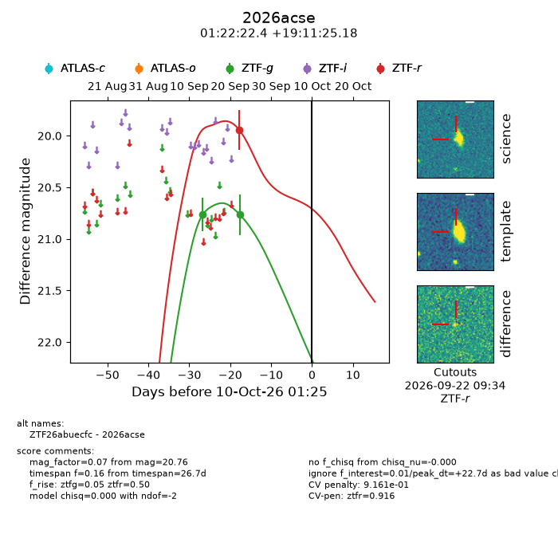
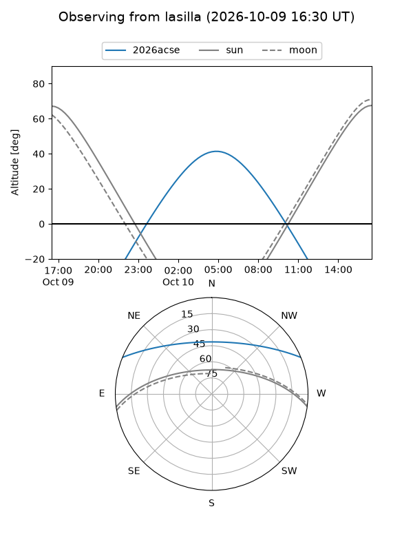
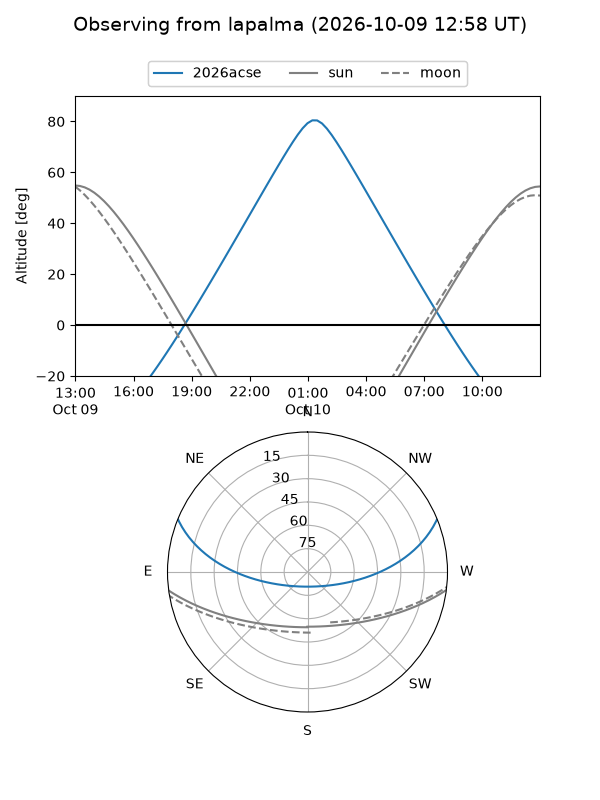
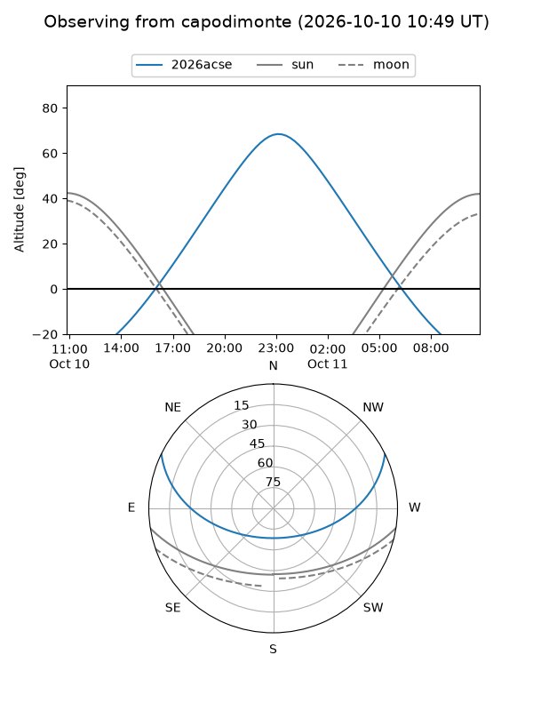
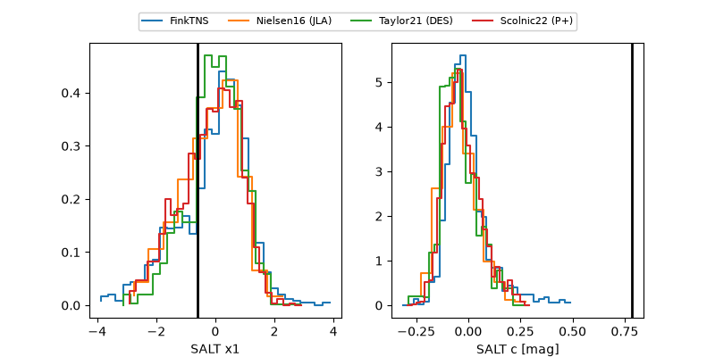

2026acse
Target 2026acse at 2026-10-10 13:26
Aliases and brokers:
FINK-ZTF: ztf.fink-portal.org/ZTF26abuecfc
Lasair-ZTF: lasair-ztf.lsst.ac.uk/objects/ZTF26abuecfc
ALeRCE-ZTF: alerce.online/object/ZTF26abuecfc
YSE-PZ: ziggy.ucolick.org/yse/transient_detail/2026acse
TNS name: wis-tns.org/object/2026acse
Direct TNS query: direct search
alt names
ZTF26abuecfc (ztf,fink_ztf)
2026acse (tns,yse)
Coordinates:
equatorial (ra, dec) = 20.5934,+19.19033
equatorial (HMS+DMS) = 01:22:22.41,+19:11:25.18
galactic (l, b) = (132.9526,-43.07869)
Flags:
peak dt: +23.2
likely cv: !!
CV pen: 0.9161492474188593
Photometry:
last ztfg=20.76, ztfr=19.95
2 ztfg, 1 ztfr detections
Lightcurve

Visibility



Additional plots
